こんにちは、Power BI サポート チームの山崎です。
Power BI のお問い合わせ後、サポートから「容量 ID を教えてください」「診断情報を採取してください」と依頼されたとき、どこから確認・採取すればよいか迷ったことはありませんか。
本記事は、サポートから依頼された情報の確認・採取に使う手順集です。下の一覧から必要な項目へ移動できます。組織内の担当者へ採取を依頼する際にもご活用ください。
お問い合わせ前の準備や、最初に伝える内容は、Power BI サポートチームへのお問い合わせ時に気をつけるポイントをご参照ください。
項目は公式ドキュメントの Power BI サポート チケットのベストプラクティスにある「Microsoft に提供する情報」の10項目に沿って整理し、Dataflow Gen2 とテナント ID の確認方法を補足しています。
重要
本記事の項目をすべて採取・提出する必要はありません。 サポートから依頼された対象・期間・手順を優先し、該当する項目をご参照ください。取得できない項目や共有できない資料がある場合は、その理由をサポートへお知らせください。
本記事は公開情報をもとに作成しています。画面・メニュー名・URL の形式は変更される場合があるため、各項目の参考情報もご確認ください。
Note
本記事の URL・画像にある XXXXXXXX-XXXX-XXXX-XXXX-XXXXXXXXXXXX は、実際の ID を伏せるための表記です。各 ID は同じ表記ですが、実際の値が同じという意味ではありません。サポートへの提出時には、調査対象の実際の URL・ID をお知らせください。
依頼された情報と、確認・採取する担当者の一覧
必要な項目だけをご参照ください。 提供する値やファイルは、各手順の「提供するもの」に記載しています。
| 依頼された情報（クリックで手順へ移動） | 確認・採取する方の目安 |
|---|---|
| 1. 問題が発生しているページの URL | 問題が発生したユーザー |
| 2. 問題の発生場所 | 操作したユーザー・作成者 |
| 3. エラー コード | 問題が発生したユーザー |
| 4. データ ソースとストレージ モード | レポート・モデルの作成者 |
| 5. 容量 ID | 容量管理者 |
| 6. データセット ID（セマンティック モデル ID） | 対象モデルを開ける方 |
| 7. PBIX ファイルのコピー | ファイルの所有者・作成者 |
| 8. ゲートウェイ ログ | ゲートウェイ端末の管理担当者 |
| 9. 診断情報 | 問題が発生する端末のユーザー |
| 10. データフローの情報（Gen2／Gen1） | 対象データフローを操作できる作成者・管理者 |
| 補足：テナント ID | 問題が発生している組織にアクセスできる方・管理担当者 |
1. 問題が発生しているページの URL
確認する方：問題が発生したユーザー
確認手順
- 問題が発生しているページをブラウザーで開きます。
- アドレス バーに表示された URL をコピーし、テキストとして控えます。
- 対象のワークスペース名・レポート名などと、アクセス方法も控えます。
提供するもの： 実際に問題が発生したページの URL と、「ワークスペースから開いた」「アプリから開いた」「共有リンクを使用した」などのアクセス方法。
補足：ワークスペース ID・レポート ID も URL から確認できます
共有ワークスペースを直接開いた URL では、/groups/ の直後の GUID がワークスペース IDです。
1 | https://app.powerbi.com/groups/XXXXXXXX-XXXX-XXXX-XXXX-XXXXXXXXXXXX/list |
ワークスペースからレポートを直接開いた場合は、/reports/ の直後の GUID がレポート IDです。
1 | https://app.powerbi.com/groups/XXXXXXXX-XXXX-XXXX-XXXX-XXXXXXXXXXXX/reports/XXXXXXXX-XXXX-XXXX-XXXX-XXXXXXXXXXXX/ReportSection |
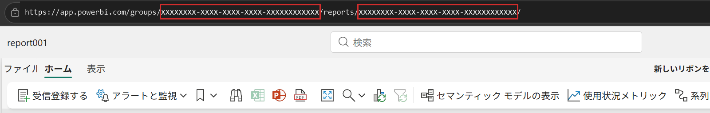
Note
上記は、ワークスペースからレポートを直接開いた場合の URL の例です。アプリ経由や共有リンク、他のサイトに埋め込まれたレポートでは、同じ方法で ID を確認できない場合があります。その場合は、ID を推測せず、表示されている URL と、どこから開いたかをお知らせください。
[マイ ワークスペース] の URL にある me は GUID ではありません。 ID を採取するためだけに共有設定を変更する必要はありません。
参考：ワークスペース ID の確認、ワークスペース ID・レポート ID の確認
2. 問題の発生場所（Desktop／サービス／両方）
確認する方：操作したユーザー、必要に応じてレポート・モデルの作成者
確認手順
- 問題が発生したアプリ・画面と操作を整理します。
- Desktop とサービスで同じ対象・操作を比較済みであれば、それぞれの結果を控えます。
- 比較していない場合は「未確認」と記載します。
提供するもの： 発生場所、操作、発生する環境・発生しない環境。Desktop の問題では、使用した Desktop のバージョンも添えると環境を特定しやすくなります。
1 | 発生場所：Power BI サービス |
ヒント
「Desktop では動く」だけでなく、何の操作が成功・失敗するかを記載してください。レポートの閲覧、データ更新、発行、エクスポートなどでは、調査する処理が異なります。
3. エラー コード
確認する方：エラーが発生したユーザー
採取手順
- エラー画面に [詳細を表示] などの項目があれば開きます。
- [コピー] ボタンがあれば、エラー詳細をコピーします。
- エラー メッセージ・コードに加え、表示されている場合はアクティビティ ID、要求 ID、時刻なども、項目名を含めて控えます。
- 実際の発生日時とタイムゾーンを記録します。画面に表示された時刻は、その表記を変えずに残してください。
提供するもの： コピーしたエラー詳細のテキスト、発生日時、直前に実行した操作。スクリーンショットは画面の状態を伝える補助として利用します。
1 | 発生日時：2026/10/25 14:30 ごろ（日本時間、UTC+9） |
Note
表示される項目はエラーの種類によって異なります。存在しない ID を作成したり、別のエラーの ID で補ったりしないでください。エラー コードは長いため、画像から手入力で転記するのではなく、コピーしたテキストを提供してください。
4. 使用されているデータ ソースとストレージ モード
確認する方：レポート・セマンティック モデルの作成者
Desktop でデータ ソースを確認する
- 対象のファイルを Power BI Desktop で開きます。
- [ファイル] → [オプションと設定] → [データ ソース設定] を開きます。
- [現在のファイルのデータ ソース] を選択し、ソースの種類と接続先を確認します。過去に接続した別ファイルのソース一覧と取り違えないようご注意ください。
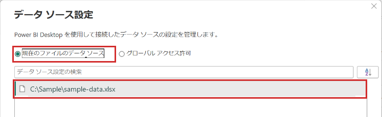
画面例：[現在のファイルのデータ ソース] を選択した状態です。接続先のファイル パスは説明用に置換しています。
サービス側では、対象ワークスペースの 系列ビューで接続関係を確認する方法があります。また、モデルの設定にあるデータ ソースの資格情報や接続に関する項目も確認の手掛かりになります。表示権限がない場合は、モデルの作成者・管理者に依頼してください。
ストレージ モードを確認する
- 対象モデルの元ファイルを Desktop で開き、モデル ビューに切り替えます。
- 確認する テーブルを選択します。列やメジャーではなく、テーブルを選択してください。
- [プロパティ] → [詳細]（バージョンによっては [詳細設定]）→ [ストレージ モード] の表示値を確認します。確認のために値を変更しないでください。
- 複数のテーブルがある場合は、問題に関係するテーブルごとに確認します。
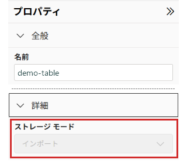
画面例：テーブルの [プロパティ] を抜粋し、中間の項目を省略しています。表示値は [インポート] です。変更できない状態でも表示値を確認できる場合があります。テーブル名は説明用に置換しています。
提供するもの： データ ソースの種類、必要な範囲の接続先情報、テーブルごとのストレージ モード、ゲートウェイ利用の有無。
1 | データ ソース：SQL Server |
Note
ライブ接続は、ここで説明したローカル テーブルのストレージ モード確認とは異なります。 既存の Power BI セマンティック モデルや Analysis Services に接続している場合は、接続先と接続方法を作成者に確認してください。「このモデルに変更を加える」などの操作で、情報採取のために接続方式を変更する必要はありません。
また、複合モデルではテーブルごとのモードが異なる場合があります。Direct Lake を使用している場合も、その旨をお知らせください。表示できない項目は推測せず「未確認」としてください。
参考：テーブルのストレージ モードを確認する、サポート記事のデータ ソースに関する案内
5. 容量 ID
確認する方：対象容量の容量管理者
容量 ID は、ワークスペースを割り当てている容量を特定するための情報です。ワークスペース ID とは別の値です。割り当て先が分からない場合は、先にワークスペース管理者へ確認してください。
確認手順
- 容量管理者のアカウントで Power BI サービスまたは Fabric ポータルにサインインします。
- 歯車アイコンから [管理ポータル] → [容量の設定]（画面によっては [容量設定]）を開きます。
- 対象の容量の種類を選択します。F SKU は [ファブリック容量]、P SKU は [Power BI Premium] など、利用中の容量に対応する項目です。
- 対象容量の行にある [アクション] の歯車アイコンなどから設定を開きます。
- [容量 ID] の欄が表示されている場合は、その値をコピーします。
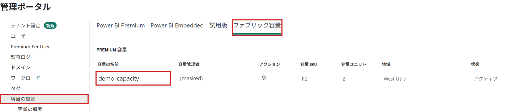
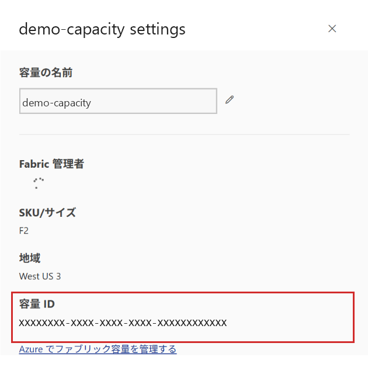
画面例：Fabric 容量（F2）の [容量 ID] 欄。
Power BI Premium では、容量の設定を開いた URL の末尾からも確認できます。
1 | https://app.powerbi.com/admin-portal/capacities/XXXXXXXX-XXXX-XXXX-XXXX-XXXXXXXXXXXX |
提供するもの： 容量名、容量の種類・SKU、容量 ID、対象ワークスペース。発生前後で割り当てを変更した場合は、変更日時と変更前後の容量もお知らせください。
Note
容量 ID を確認できない場合は、推測せず、容量名・種類など確認できた情報をお知らせください。共有容量や PPU を利用している場合は、その旨をお知らせください。情報採取のために容量を新規作成したり、ワークスペースの割り当て先を変更したりする必要はありません。
なお、Azure のサブスクリプション ID・リソース ID は、ここでいう容量 ID とは異なります。
参考：Fabric 容量の管理
6. データセット ID（セマンティック モデル ID）
確認する方：対象モデルを開ける作成者・管理者など
「データセット」は、現在の「セマンティック モデル」の旧称です。 公式記事の「データセット ID」も同じ ID を指し、URL には現在も datasets という表記が使われています。
モデルを開いた画面から確認する
- 対象モデルがあるワークスペースを開きます。
- 対象モデルの […] → [セマンティック モデルを開く] を選択します。
- URL が次の形式の場合、
/modeling/と/modelViewの間の GUID をコピーします。
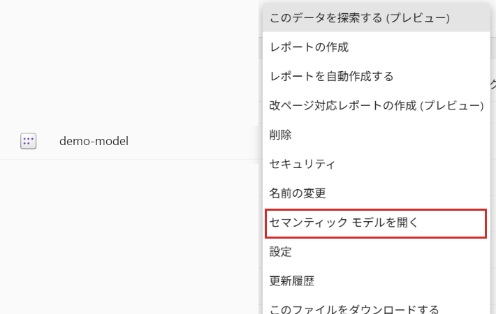
画面例：[セマンティック モデルを開く] を選択します。モデル名は説明用の demo-model に統一しています。
1 | https://app.powerbi.com/groups/XXXXXXXX-XXXX-XXXX-XXXX-XXXXXXXXXXXX/modeling/XXXXXXXX-XXXX-XXXX-XXXX-XXXXXXXXXXXX/modelView?experience=power-bi |
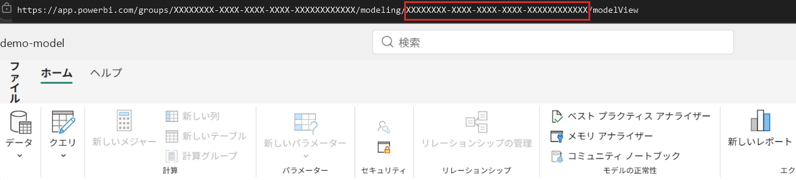
画面例：検証画面で確認した URL の形式です。ID・モデル名は置換し、モデル構造はトリミングしています。画像では URL 末尾のクエリ文字列を省略しています。
補足：設定画面から確認する方法
モデルの [設定] を開き、URL が次の形式であれば、/datasets/ の直後の GUID でも確認できます。
1 | https://app.powerbi.com/groups/XXXXXXXX-XXXX-XXXX-XXXX-XXXXXXXXXXXX/settings/datasets/XXXXXXXX-XXXX-XXXX-XXXX-XXXXXXXXXXXX |
提供するもの： モデル名・ID、モデルがあるワークスペース名・URL。レポートとモデルが別ワークスペースにある場合は、その対応関係もお知らせください。
重要
レポート ID とモデル ID は別の値です。 また、[設定] がサイドパネルで開き、URL が /groups/{ワークスペース ID}/list のままの場合、そこからモデル ID は確認できません。前述のモデルを開く手順を利用してください。
対象モデルが不明な場合は系列ビューや作成者に確認し、開けない場合・URL が例と異なる場合は推測せず、その理由と確認できた情報をお知らせください。
7. PBIX ファイルのコピー（インポート モデル）
準備する方：対象ファイルの所有者・作成者
準備手順
- 問題が発生するモデル・レポートに対応する、手元の対象 PBIX を特定します。古い版や別のレポートと取り違えないようにします。
- 元ファイルを上書きせず、提出用のコピーを用意します。
- ファイル内の取り込みデータ、クエリ、接続先、パラメーター、レポート内の情報などについて、組織内で共有可否を確認します。
- そのまま共有できない場合は、匿名化・サンプル化した再現用ファイルを検討し、同じ問題が再現するかを確認します。
- サポートが案内する提出方法で、承認済みのファイルと再現手順を提供します。
提供するもの： 対象または再現用の .pbix、再現手順、使用した Desktop のバージョン、元の構成から変更した点。
重要
レポートの表示上で値を隠すだけでは、取り込み済みデータの匿名化にはなりません。 接続先データを更新すると実データが再取得される構成にも注意してください。匿名化で再現しなくなった場合は、その点をサポートへ相談してください。
サービスから PBIX をダウンロードできるかは、権限・設定・モデルの機能などによって異なります。手元にファイルがなければ作成者に確認し、取得できなければその旨を伝えてください。取得のためだけにテナント設定や接続方式を変更する必要はありません。
8. ゲートウェイ ログ
採取する方：対象のオンプレミス データ ゲートウェイがインストールされた端末の管理担当者
以下はオンプレミス データ ゲートウェイのアプリから採取する例です。VNet データ ゲートウェイなど、別の種類のゲートウェイに同じ手順を適用しないでください。
採取手順
- 対象モデルの接続に使われているゲートウェイと、その端末を管理担当者に確認します。自分の PC がゲートウェイ端末とは限りません。
- ゲートウェイがインストールされた端末で、オンプレミス データ ゲートウェイのアプリを開きます。
- [診断] を開きます。期間指定欄がある場合は、問題の発生日時を含む開始日・終了日を指定します。
- [ログのエクスポート] を選択します。
- 生成された ZIP を確認します。公式手順では、Windows デスクトップの ODGLogs フォルダーへの保存が案内されています。実際の出力先は画面・出力結果でも確認してください。
- 発生日時と採取日時、対象ゲートウェイ・端末を控え、案内された方法で ZIP を提出します。
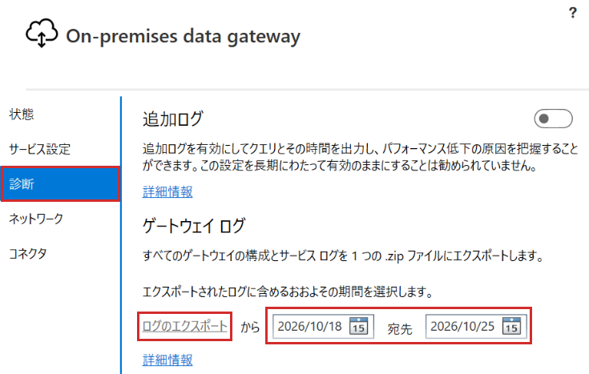
画面例：[診断] の期間指定と [ログのエクスポート] の表示位置です。画像ではリンクがグレー表示で、エクスポートの実行・成功を示す画面ではありません。操作できない場合は、ゲートウェイの状態を管理担当者に確認してください。
提供するもの： エクスポートした ZIP、問題の発生日時・タイムゾーン、採取日時、ゲートウェイ名・バージョン、どの端末から採取したか。
Note
クラスター構成の場合は、どのメンバーのログが必要か、サポートと管理担当者で確認してください。追加ログの有効化や再現操作が必要な場合は、影響と採取時間帯を調整します。ログ採取のためだけに本番ゲートウェイを停止・再起動したり、既存ログを削除したりしないでください。
参考：オンプレミス データ ゲートウェイ アプリからログを収集する
9. 診断情報（Power BI Desktop）
採取する方：問題が発生する Desktop 端末のユーザー
公式の 診断情報の収集と送信では、Microsoft サポートから依頼された場合に診断の詳細を保存・送信するよう案内されています。
診断 ZIP の保存手順
- 対象端末の Desktop で [ファイル] → [オプションと設定] → [オプション] を開きます。
- [グローバル] → [診断] を選択します。
- サポートの依頼に従って [トレースを有効にする] をオンにします。採取前の状態も控えてください。
- 再現操作を依頼されている場合は、合意した手順を実施し、発生日時とタイムゾーンを控えます。
- [診断情報を収集]（表記が [診断情報の収集] の場合もあります）を選択します。
- [診断の詳細を保存する] ダイアログで収集される情報を確認し、必要に応じて [参照] で保存先を選んで [保存] します。
- 保存完了画面で、正常に収集されたことと、
PBIDesktopDiagnosticInfo.YYYYMMDDTHHmmss.zipのような名前の ZIP の保存先を確認します。ファイル名の日付・時刻部分は採取時によって異なります。既定ではドキュメント フォルダーに保存されますが、実際の出力先は画面で確認してください。
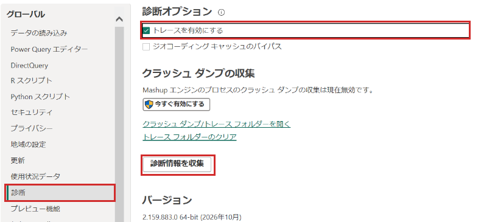
画面例：[診断] の [トレースを有効にする] と [診断情報を収集]。Power BI Desktop 2026年10月版で確認した表記です。
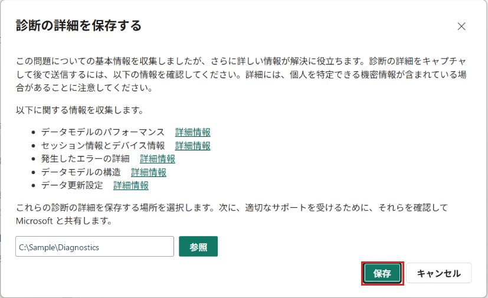
画面例：収集内容・共有上の注意を確認し、保存先を指定して [保存] を選択します。保存先は説明用に置換しています。
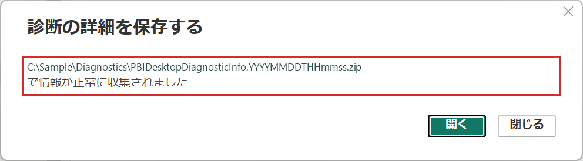
画面例：正常に収集されたことと保存先を確認します。ユーザー名・組織名を含む保存先と、ファイル名の日付・時刻部分は説明用に置換しています。
提供するもの： 保存された診断 ZIP、Desktop のバージョン、再現手順・発生日時、採取時の操作。
マッシュアップ トレースを依頼された場合
マッシュアップ トレースは、上記の診断 ZIP の保存とは別の採取手順が必要です。
依頼があった場合は、トレースを有効にして再現した後、Desktop を終了してディスクに書き出し、対象の Traces フォルダーを圧縮する手順などを確認してください。保存場所はインストール方法によって異なり、[診断] の [クラッシュ ダンプ/トレース フォルダーを開く] リンクも確認に利用できます。既存ログの退避などを含め、具体的な採取範囲・手順はサポートの案内に従ってください。
重要
診断 ZIP にはモデル構造、パス、環境情報などが含まれることがあります。組織内で共有可否を確認してください。採取後に追加調査が不要となり、元がオフだった場合は、サポートと確認のうえトレース設定を元に戻してください。
10. データフローの情報（Gen2／Gen1 の JSON）
採取する方：対象データフローを操作できる作成者・管理者
公式記事の「データフロー JSON」は Gen1 向けです。現在使用している種類を確認し、該当する手順をご参照ください。 情報採取のために Gen1 から Gen2 へ移行する必要はありません。
| 利用している種類 | クエリなどの内容を共有する資料の例 | 更新失敗などの調査に役立つ情報 |
|---|---|---|
| Dataflow Gen2 | Power Query テンプレート（.pqt）。必要な定義の範囲・形式はサポートの依頼を確認 |
対象実行の詳細、リクエスト ID・セッション ID、必要に応じて詳細ログ |
| データフロー Gen1（レガシ） | 公式サポート記事で案内されている JSON（.json） |
対象名・URL、発生日時、エラー詳細など |
Dataflow Gen2：クエリを共有するためのテンプレート
クエリ内容の共有を依頼された場合は、Power Query テンプレートの利用を検討できます。
- ワークスペースで対象の Dataflow Gen2 を編集画面で開きます。
- Power Query Online エディターの [ホーム] → [テンプレートのエクスポート] を選択します。公式のテンプレート手順では [共有] グループ内として案内されており、以下の画面例ではリボン右側に表示されています。
- テンプレート名と、必要に応じて説明を入力します。
- [データの送信先設定を含める] が表示される場合は、サポートが依頼した採取範囲に合わせて選択し、選択状態も控えます。不明な場合は、必要な範囲を確認してください。
- [OK] でエクスポートし、ダウンロードされた
.pqtファイルについて、共有可否を確認します。採取のためだけにクエリを編集・保存・発行したり、別アイテムへインポートしたりする必要はありません。
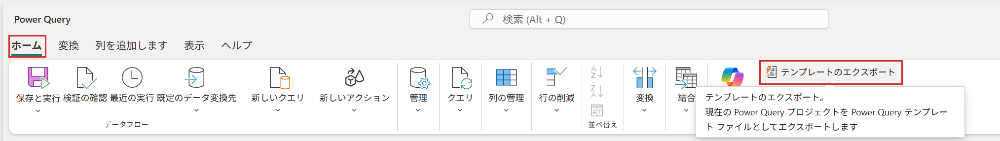
画面例：[ホーム] タブの [テンプレートのエクスポート] を選択します。
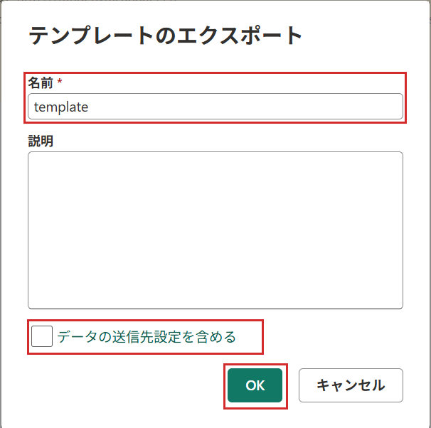
画面例：名前と説明を指定し、[OK] でエクスポートします。この例では [データの送信先設定を含める] はオフですが、すべての調査でオフを推奨する意味ではありません。
提供するもの： 依頼された場合の .pqt、データフロー名・URL・種類、ワークスペースの URL、再現手順、送信先設定を含めたかどうか。
重要
.pqt は Gen1 の JSON や、データフロー全体の完全なバックアップと同じものではありません。 Power Query スクリプトと関連メタデータを含みますが、更新履歴、データフロー ID、スケジュールされた更新定義、接続・資格情報の定義などは含まれません。これらが調査に必要な場合は別途お知らせください。
接続・資格情報の定義が含まれない場合でも、クエリやパラメーターへ直接記載した値に機密情報が含まれる可能性があります。共有前の確認は必要です。
Dataflow Gen2：更新に関する問題は、対象実行の詳細も確認
- 対象 Dataflow Gen2 のメニューなどから [最近の実行]（更新履歴）を開きます。
- 問題が発生した実行を選択し、開始・終了時刻、状態、エラー、要求 ID（リクエスト ID）・セッション ID・データフロー ID など、表示されている情報を控えます。
- 詳細ログの採取を依頼された場合は、対象実行の詳細画面で [詳細なログのダウンロード]（画面によっては [詳細ログのダウンロード]）を選択します。
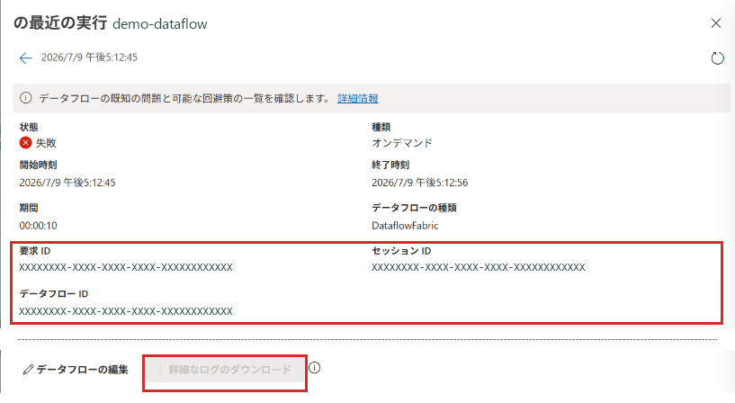
画面例：対象実行の情報と [詳細なログのダウンロード] の表示位置です。データフロー名・ID は説明用に置換し、中間のテーブル一覧・エラー詳細を省略しています。この画像ではログのボタンがグレー表示で、ダウンロード成功を示す画面ではありません。 ボタンの表記・利用可否は画面や採取条件により異なります。
提供するもの： 対象実行の情報と発生日時・タイムゾーン、必要に応じてダウンロードしたログ ZIP。クエリのテンプレートと実行ログは、調査する対象が異なります。
Note
公式情報では、詳細ログは更新完了から数分後に利用でき、最大28日間利用可能とされています。ダウンロードには少なくともワークスペースの閲覧者ロールが必要で、ゲートウェイを使用する更新では、ゲートウェイ診断に関する管理者の同意設定も条件となります。表示されない場合は、権限や採取条件を管理者・サポートに確認してください。本記事の手順を実行するためだけに、診断の同意設定や権限を変更しないでください。
データフロー Gen1：既存環境向けの JSON 採取
- 対象の Gen1 があるワークスペースを開きます。
- 対象の […] → [エクスポート .json]（表記は画面により異なります）を選択します。
- ダウンロードされた JSON が対象のものか、定義中の情報を共有できるかを確認します。
提供するもの： 依頼された .json、データフロー名・種類、ワークスペースの URL、再現手順。加工した場合は変更内容も明記してください。
JSON は格納データそのものの採取ではありませんが、クエリに直接記載された値や接続先などを含む可能性があります。メニューが表示されない場合は、その旨をお知らせください。Gen2 の .pqt やログを Gen1 の JSON として提出したり、拡張子だけ変更したりしないでください。
補足：テナント ID を確認する場合
複数テナントの利用やゲスト アクセスなどで、対象テナントの特定を依頼された場合にご参照ください。
Fabric／Power BI の画面から確認する
- 問題が発生している組織の Fabric ポータルまたは Power BI サービスを開きます。
- 画面右上の [ヘルプとサポート]（?） を開き、[Microsoft Fabric について] または [Power BI について] などのバージョン情報のリンクを選択します。表記は、選択しているワークロードや画面によって異なります。
- 表示されたダイアログで [クリップボードにコピー] を選択します。
- コピーした内容をメモ帳などに貼り付け、[テナントのURL] が末尾までコピーされていることを確認します。ダイアログ上では URL の後半が見切れる場合があるため、画面に見えている部分だけを手入力せず、コピーしたテキストから確認してください。
- URL 内の
ctid=の直後の GUID がテナント ID です。ID はハイフンを含む36文字で、途中で切れていないことを確認します。
1 | https://app.fabric.microsoft.com/home?ctid=XXXXXXXX-XXXX-XXXX-XXXX-XXXXXXXXXXXX |
提供するもの： テナント ID と、確認したテナント URL。
Note
ゲストとして別の組織にアクセスしている場合などは、自分の所属組織ではなく、問題が発生しているコンテンツを保有する組織の情報か確認してください。テナント URL が表示されない場合や、対象組織が分からない場合は、確認できた情報を添えて管理担当者・サポートに相談してください。
管理担当者は Microsoft Entra 管理センターから確認することもできます。
参考：外部ユーザーのテナント ID、Fabric のバージョン情報を開く手順
まとめ
依頼された項目を確認し、該当する手順で採取して、サポートが案内する方法で提供してください。 提供前には組織内で共有可否を確認し、採取対象・日時も添えてください。取得できない項目や共有制約がある場合、依頼内容が不明な場合は、サポートへご相談ください。
本記事が、お問い合わせ後の情報採取や、組織内の担当者との連携をスムーズに進める一助となれば幸いです。
参考情報
- Power BI サポートチームへのお問い合わせ時に気をつけるポイント — お問い合わせ前の準備と、最初に伝える内容。
- Power BI サポート チケットのベストプラクティス — 本記事の基となる10項目。
- テーブルのストレージ モード — テーブル単位の確認方法、接続方法との違い。
- Fabric 容量の管理 — 容量設定へのアクセス。
- オンプレミス データ ゲートウェイのトラブルシューティング — アプリからのログ収集。
- 診断情報の収集と送信 — 診断 ZIP とマッシュアップ トレースの収集。
- データフローの作成（レガシ） — Gen1 の JSON エクスポート。
- Power Query テンプレート — Gen2 などで使用する
.pqtの内容とエクスポート方法。 - Dataflow Gen2 の更新履歴と監視 — 対象実行の情報と詳細ログの採取。
- Power BI 実装計画：テナントの設定 — Fabric の画面でテナント ID（CTID）を確認する方法。
- Fabric のホーム リージョンを見つける — ヘルプからバージョン情報を開く手順。
※本情報の内容（添付文書、リンク先などを含む）は、作成日時点でのものであり、予告なく変更される場合があります。